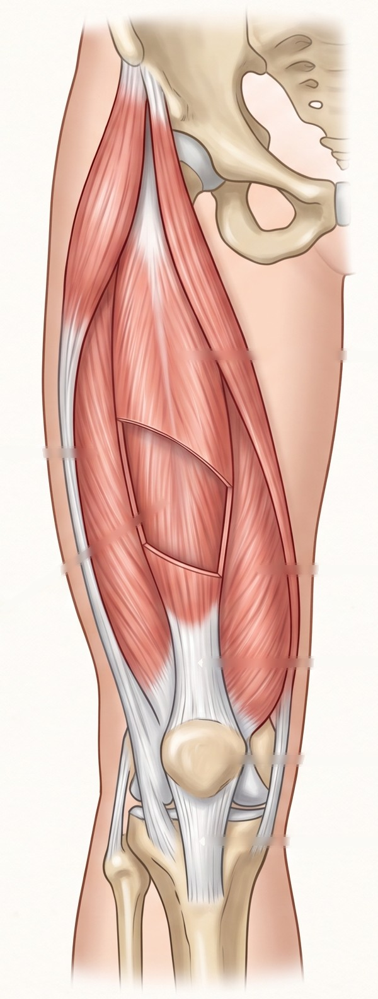
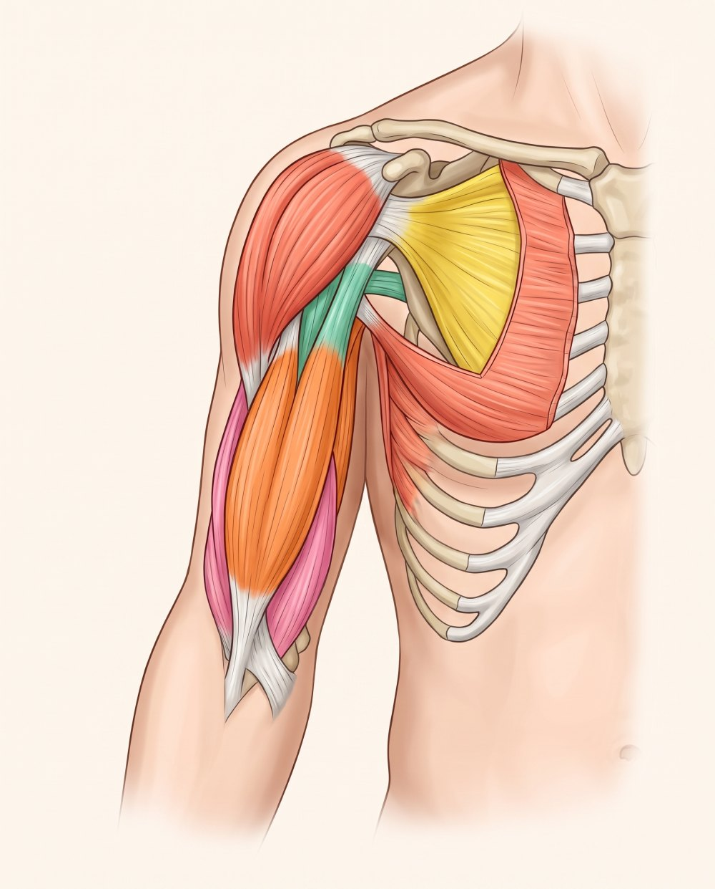

Disponível
Coxa
Quadríceps, extensores, flexores, adutores e abdutores, com movimento e alongamentos.

Novo
Braço e ombro
Deltoide, manguito rotador, bíceps, tríceps, peitorais, trapézio, serrátil e romboides, com ilustração e 3D.